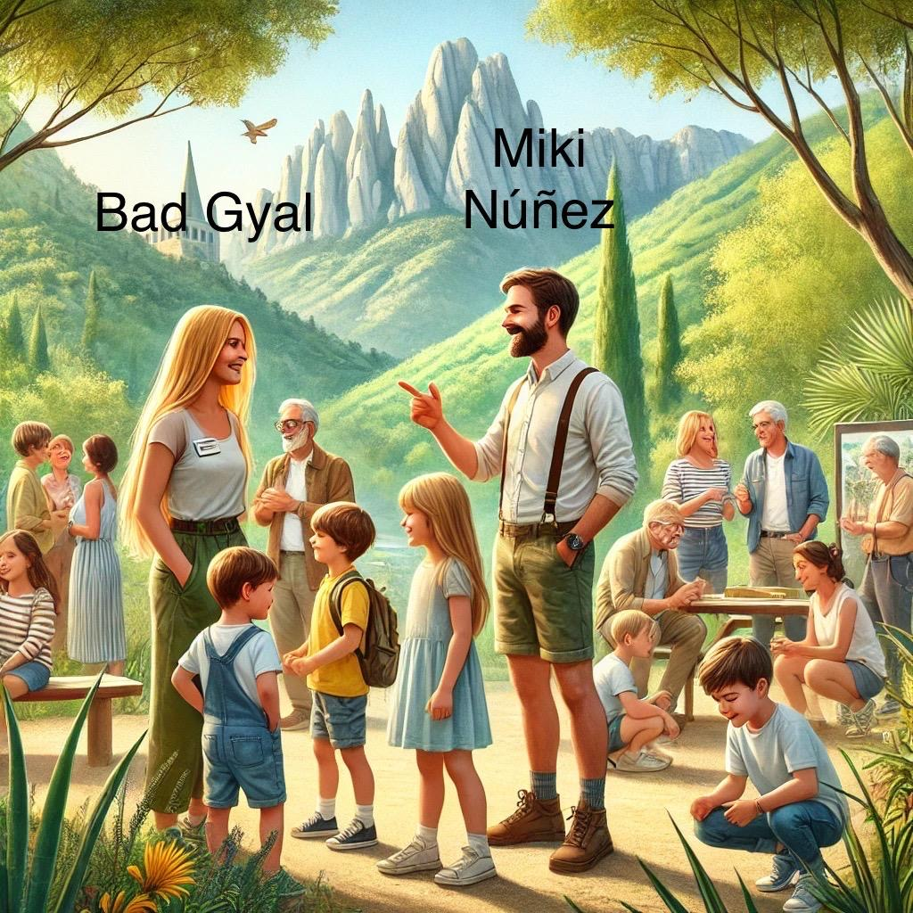
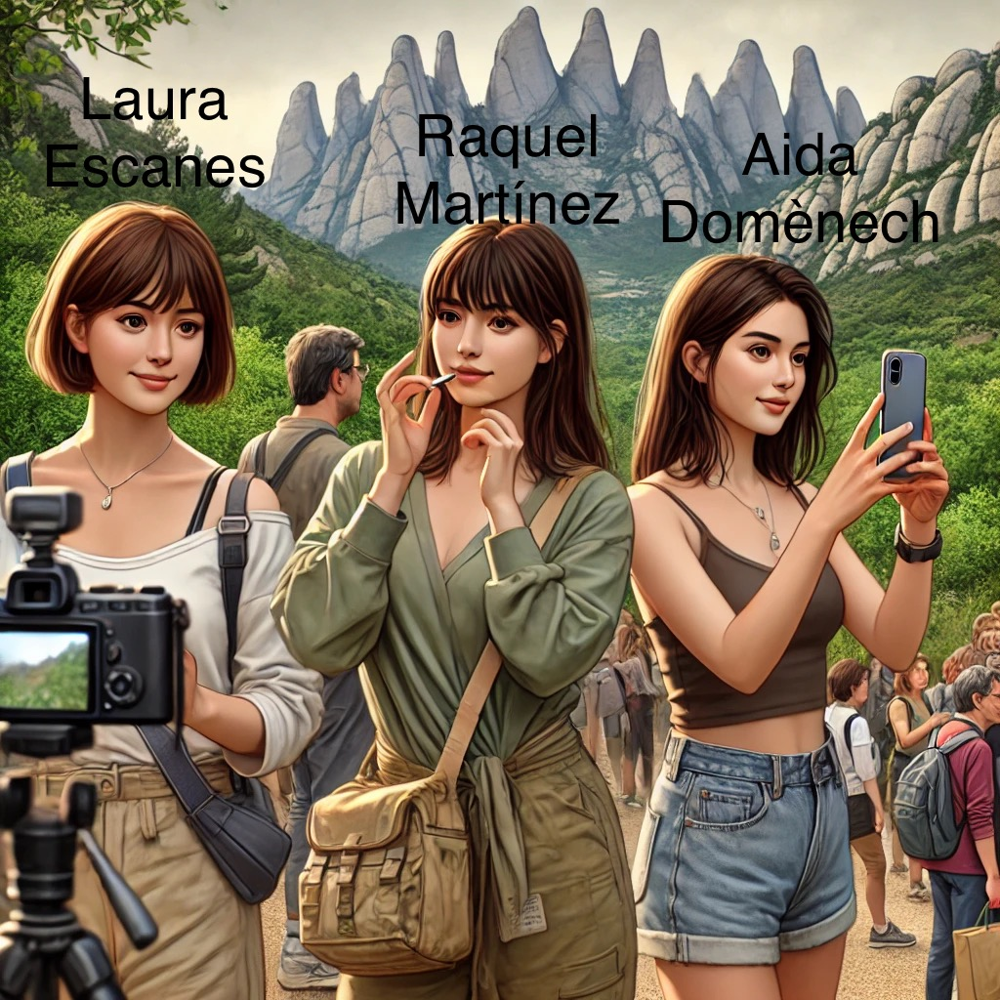
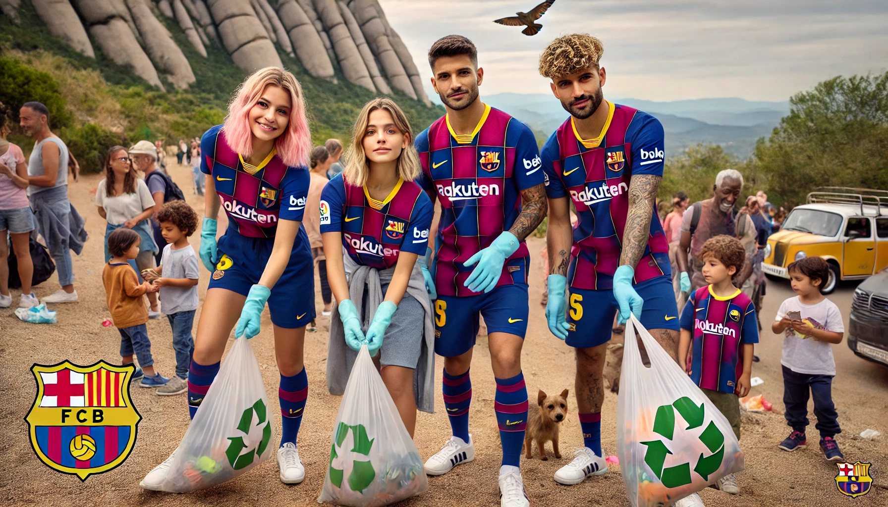
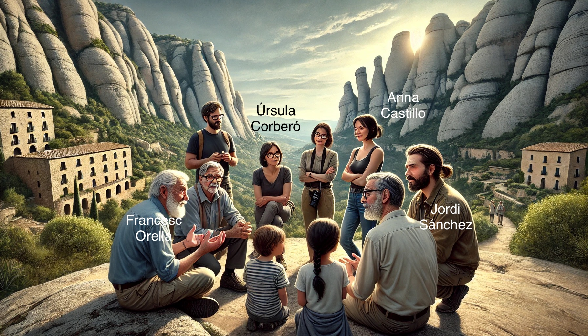
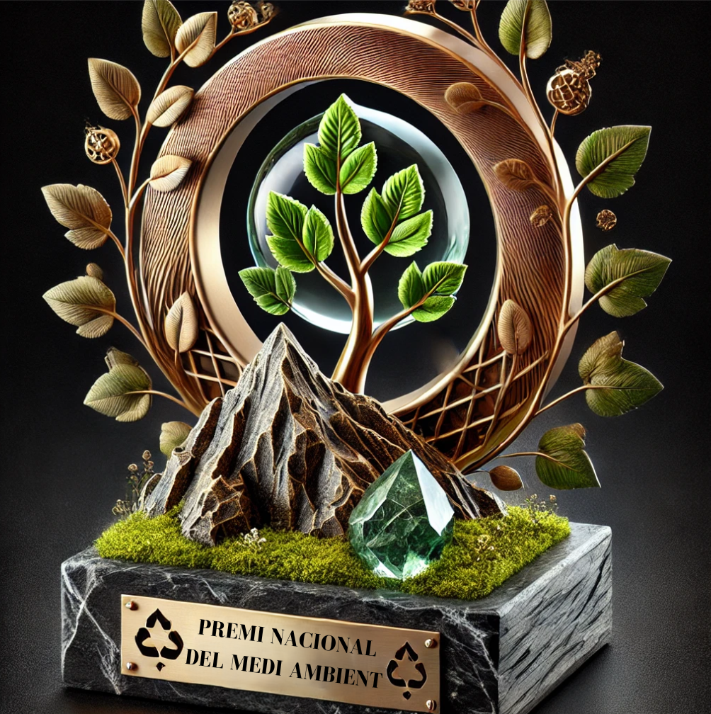
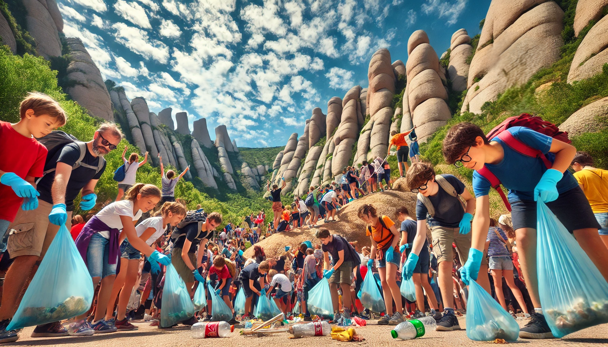

🎤 Bad Gyal i Miki Núñez a Montserrat

Avui hem tingut la visita especial de Bad Gyal i Miki Núñez, que han participat en les activitats de conscienciació ambiental. Han compartit moments amb els participants i han destacat la importància de cuidar la natura!
📱 Influencers per la Natura

Raquel Martínez (Bonbon Reich), Laura Escanes i Aida Domènech (Dulceida) s’han unit a la nostra iniciativa! Han compartit l’experiència a les xarxes socials per sensibilitzar els seus seguidors sobre la importància de respectar Montserrat.
⚽ Esportistes de Primera a Montserrat

Estem molt contents d’haver rebut jugadors i jugadores del equip del fùtbol club Barcelona. Han participat en la neteja del bosc i han gaudit d’una ruta guiada per conèixer la fauna i flora local.
🎭 Actors i Actrius compromesos

Avui hem comptat amb la presència de Úrsula Corberó, Jordi Sánchez, Anna Castillo i Francesc Orella. Han quedat fascinats per la bellesa de Montserrat i han destacat la importància de protegir aquest espai únic.
🏅 Un Nou Premi per a CuideMontserrat

Estem molt emocionats d’anunciar que hem rebut el Premi Nacional del Medi Ambient! Aquest reconeixement ens dona encara més força per continuar treballant per la natura.
🚶♂️ Segona Jornada de Neteja

Avui hem repetit l’experiència amb nous participants i hem aconseguit recollir encara més residus! Cada petita acció suma per mantenir Montserrat net.